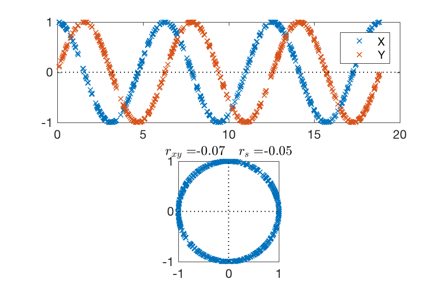

class: center, middle .title[Lecture 2: Covariance and correlation] .author[Shane Elipot] .institution[The Rosenstiel School of Marine and Atmospheric Science, University of Miami] .coauthor[] .institution[] .date[] .note[] .footnote[Created with [{Remark.js}](http://remarkjs.com/) using [{Markdown}](https://daringfireball.net/projects/markdown/) + [{MathJax}](https://www.mathjax.org/)] --- exclude: true name: foreword class: left, .toc[[✧](#toc)] ## Foreword --- name: references class: left, .toc[[✧](#toc)] ## References [1] Bendat, J. S., & Piersol, A. G. (2011). *Random data: analysis and measurement procedures* (Vol. 729). John Wiley & Sons. [2] Thomson, R. E., & Emery, W. J. (2014). *Data analysis methods in physical oceanography*. Newnes. [dx.doi.org/10.1016/B978-0-12-387782-6.00003-X](http://dx.doi.org/10.1016/B978-0-12-387782-6.00003-X) [3] Taylor, J. (1997). *Introduction to error analysis, the study of uncertainties in physical measurements*. [4] Press, W. H. et al. (2007). *Numerical recipes 3rd edition: The art of scientific computing*. Cambridge university press. [5] Kanji, G. K. (2006). *100 statistical tests*. Sage. [6] von Storch, H. and Zwiers, F. W. (1999). *Statistical Analysis in Climate Research*, Cambridge University Press --- name: toc class: left, .toc[[✧](#toc)] # Lecture 2: Outline 1. [Covariance & correlation](#covariance) 2. [Lagged covariance & correlation](#laggedcovariance) 3. [A quick look at "A leisurely look at the bootstrap, the jackknife, and cross-validation"](#bootstrap) 4. [Covariance and correlation of bivariate variables](#bivariate) --- exclude: true name: introduction class: center, middle, .toc[[✧](#toc)] # 1. Introduction --- exclude: true class: left, .toc[[✧](#toc)] ## Introduction --- name: covariance class: center, middle, .toc[[✧](#toc)] # 1. Covariance & Correlation --- class: left, .toc[[✧](#toc)] ## Covariance (definitions) Whereas we previously dealt with a single r.v. `$x$`, we now deal with two r.vs., `$x$` and `$y$`. In particular, we are interested in evaluating how much they covary, possibly to make some statement about a causation from one variable to the other, perhaps explained by a dynamical relationship. Perhaps the first quantity to consider is the *covariance of $x$ and $y$*: `$$ \text{Cov}(x,y) = C_{xy} \equiv E[(x-\mu_x)(y-\mu_y)] $$` The *variance of $x$* is a particular case of covariance when $y$ and $x$ are the same r.v.: `$$ \text{Cov}(x,x) = C_{xx} \equiv E[(x-\mu_x)(x-\mu_x)] = E[(x-\mu_x)^2] = \text{Var}(x) = \sigma^2_x $$` --- class: left, .toc[[✧](#toc)] ## Covariance (definitions) `$$ \begin{eqnarray} C_{xy} & = & E[(x-\mu_x)(y-\mu_y)] = E[xy] - \mu_x \mu_y \cr & = & \int^{+\infty}_{-\infty} (x-\mu_x)(y-\mu_y)p(x,y)\, dx dy \cr \end{eqnarray} $$` `$p(x,y)$` is called the *joint probability density function* or *joint PDF*. If `$p(x,y) = p(x) p(y)$` where $p(x)$ and $p(y)$ are the PDFs of $x$ and $y$, respectively, then it is said that $x$ and $y$ are *independent*. Just like we were able to build histograms from samples $X_n$ of a single r.v. $x$, we can also build 2D histograms from pairs of samples $(X_n,Y_n)$ in order to estimate the joint PDF. --- class: left, .toc[[✧](#toc)] ## Correlation Since the r.v. $x$ and $y$ can be of different nature or magnitude, we can consider the normalized covariance, that is the *correlation* between $x$ and $y$ `$$ \rho_{xy} = \frac{C_{xy}}{\sqrt{C_{xx}C_{yy}}} = \frac{C_{xy}}{\sigma_x \sigma_y} = \frac{E[(x-\mu_x)(y-\mu_y)]}{\left\{E[(x-\mu_x)^2]E[(y-\mu_y)^2]\right\}^{1/2}} $$` Since we have the property that `$|C_{xy}|\leq \sigma_x \sigma_y$`, the correlation is a number between `$-1$` and `$1$`. If $\rho_{xy} = 0$ it is said that the variable $x$ and $y$ are *uncorrelated*. If two r.vs. are independent `$[p(x,y) = p(x) p(y)]$` **then** they are also uncorrelated, but if two r.vs. are uncorrelated, they are not necessarily independent (i.e. maybe `$p(x,y) \neq p(x) p(y)$`) --- class: left, .toc[[✧](#toc)] ## Covariance & Correlation: estimation Just like `$s^2_x$` is an unbiased estimate of `$\sigma^2_x$`, an unbiased estimate of the covariance is `$$ s_{xy} = \widehat{C}_{xy} = \frac{1}{N-1}\sum_{n=1}^N (X_n-\overline{X})(Y_n-\overline{Y}) $$` and an estimate of `$\rho_{xy}$` is `$$ \begin{eqnarray} r_{xy} & = & \widehat{\rho}_{xy} = \frac{s_{xy}}{\sqrt{s^2_{x}s^2_{y}}} = \frac{\sum_{n=1}^N(X_n-\overline{X})(Y_n-\overline{Y})} {\left[\sum_{n=1}^N (X_n-\overline{X})^2\sum_{n=1}^N(Y_n-\overline{Y})^2\right]^{1/2}}\cr \end{eqnarray} $$` <!-- & = & \frac{\sum_{n=1}^N X_n Y_n - N \overline{X}\overline{Y}} {\left[(\sum_{n=1}^NX^2_n-N\overline{X}^2)(\sum_{n=1}^N Y^2_n-N\overline{Y}^2)\right]^{1/2}} --> `$r_{xy}$` is called the *Pearson's correlation coefficient*. It measures the relative strength of a *linear relationship* between $x$ and $y$ (see Lecture 3). A *nonlinear relationship* or *noise* will make `$r_{xy}$` tends to zero. --- class: left, .toc[[✧](#toc)] ## Correlation: significance Since `$x$` and `$y$` are r.vs., `$r_{xy}$` is also a r.v. with a given distribution. Typically, one wants to test if `$r_{xy}$` is different from zero. [Kanji (2006), reference [5]](#references) recommends to calculate the following test statistic (test 12) `$$ t = \frac{r_{xy}}{\sqrt{1-r_{xy}^2}}\sqrt{N-2} \sim t(0,N-2) $$` which follows the Student's t-distribution with `$N-2$` degrees of freedom. --- class: left, .toc[[✧](#toc)] ## Correlation: confidence interval Alternatively, one may want to derive CIs for `$r_{xy}$` by using the Fisher transformed variable: `$$ w = \tanh^{-1} r_{xy} = \frac{1}{2}\ln\left(\frac{1+r_{xy}}{1-r_{xy}}\right) \sim \mathcal{N}\left[\frac{1}{2}\ln\left(\frac{1+r_{xy}}{1-r_{xy}}\right),\frac{1}{\sqrt{N-3}}\right] $$` Since `$r_{xy} = \tanh w$`, the CI derived for `$w$` can be used to calculate CIs for `$r_{xy}$`. The test statistic `$$ z = \frac{w - w_0}{1/\sqrt{N-3}} \sim \mathcal{N}(0,1) $$` can be used to test the null hypotheses that `$\rho_{xy} = \tanh w_0$`, see test 13 of [Kanji (2006), reference [5]](#references). --- class: left, .toc[[✧](#toc)] ## Correlation: effective degrees of freedom A crucial aspect of testing for the significance of `$\rho_{xy}$` is to use the right value for `$N$`, which is the size of your sample if your data points are independent. Otherwise, a lower value of $N$, known as the *effective degree of freedom*, needs to be considered. We will explore these aspects later and during the practical this afternoon. --- class: left, .toc[[✧](#toc)] ## Serial correlation: example Let's consider a realization `$X_{1},X_{2},\ldots,X_{N}$` of a time series `$x(t)$`, and calculate the correlations `$\rho(X_n,X_{n+1})$`: .center[] Since `$r_{xy} \neq 0$`, `$X_n$` and `$X_{n+1}$` are correlated, hence they are not independent samples. It is said that $x$ is *serially correlated*, thus the number of degrees of freedom is less than $N$. The variance and bias of correlation estimates involving `$x$` are likely to be affected. --- class: left, .toc[[✧](#toc)] ## Spearman correlation The Pearson's correlation coefficient is not the only correlation coefficient. The *rank correlation coefficient* or *Spearman correlation coefficient* is `$$ r_s = 1 - \frac{6\sum_{n=1}^N (R_{x;n} - R_{y;n})^2}{N(N^2-1)} $$` where `$R_{x;n}$` is the rank of the data sample `$X_n$`. -- As an example, with `$N=3$` `$$ \begin{eqnarray} X_n & \quad R_{x;n} \quad & Y_n \quad & R_{y;n} \quad & R_{x;n} - R_{y;n} \cr 4 & 3 & 1 & 1 & 2 \cr -1 & 1 & 12 & 3 & -2 \cr 3 & 2 & 3 & 2 & 0 \cr \end{eqnarray} $$` -- `$r_s$` measures if the relationship between `$x$` and `$y$` is monotonically increasing (`$r_s$>0`) or decreasing (`$r_s<0$`). For large `$N$`, `$r_s \approx \mathcal{N}(0,1/\sqrt{N-1})$` under `$H_0: r_s = 0$`. --- class: left, .toc[[✧](#toc)] ## Pearson vs Spearman .center[] --- class: left, .toc[[✧](#toc)] ## Covariance: multivariate case If you are dealing with more than two r.vs., let's say `$P$` variables `$x_1, x_2,\ldots,x_P$` for which you have `$n = 1,2,\ldots,N$` samples, you need to build the *covariance matrix* .center[ `$\mathbf{C}_{xx} \equiv \left[\matrix{C_{x_1x_1} & C_{x_1x_2} & \dots & C_{x_1x_P}\cr C_{x_2x_1} & C_{x_2x_2} & \dots & C_{x_2x_P}\cr \vdots & \vdots & \cdots & \vdots \cr C_{x_Px_1} & C_{x_Px_2} & \dots & C_{x_Px_P}\cr }\right]$` ] or the *correlation matrix* .center[ `$\mathbf{\rho}_{xx} \equiv \left[\matrix{\rho_{x_1x_1} & \rho_{x_1x_2} & \dots & \rho_{x_1x_P}\cr \rho_{x_2x_1} & \rho_{x_2x_2} & \dots & \rho_{x_2x_P}\cr \vdots & \vdots & \cdots & \vdots \cr \rho_{x_Px_1} & \rho_{x_Px_2} & \dots & \rho_{x_Px_P}\cr }\right]$` ] Methods to study these matrices will be covered in lecture 5 (Eigen techniques). --- class: left, .toc[[✧](#toc)] ## Covariance: multivariate case; estimate If you have `$P$` r.vs. `$x_1, x_2,\ldots,x_P$` for which you have `$n = 1,2,\ldots,N$` samples, typically arranged in a `$N \times P$` data matrix `$\mathbf{X} = \left[\mathbf{X}_1,\, \mathbf{X}_2,\, \cdots ,\,\mathbf{X}_P\right] =\left[\matrix{X_1(1) & X_2(1) & \dots & X_P(1)\cr X_1(2) & X_2(2) & \cdots & X_P(2)\cr \vdots & \vdots & \cdots & \vdots \cr X_1(N) & X_2(N) & \cdots & X_P(N)\cr}\right]$` The estimate of the covariance matrix is `$\widehat{\mathbf{C}}_{xx} = \frac{1}{N-1} \mathbf{X}^\mathrm{T}\mathbf{X} = \left[\matrix{\widehat{C}_{x_1x_1} & \widehat{C}_{x_1x_2} & \dots & \widehat{C}_{x_1x_P}\cr \widehat{C}_{x_2x_1} & \widehat{C}_{x_2x_2} & \dots & \widehat{C}_{x_2x_P}\cr \vdots & \vdots & \cdots & \vdots \cr \widehat{C}_{x_Px_1} & \widehat{C}_{x_Px_2} & \dots & \widehat{C}_{x_Px_P}\cr }\right]$` --- class: left, .toc[[✧](#toc)] ## Correlation: beware! It is not because you find a zero or non significant correlation between two r.vs. that there is no formal or dynamical relationship between the two! .center[] --- class: left, .toc[[✧](#toc)] ## Correlation: beware! This animation shows the correlation coefficient between two sinusoid signals F and G as a function of phase lag. .center[<img style="width:100%" src="figures/cross_correlation_animation.gif">] Gif by <a href="//commons.wikimedia.org/w/index.php?title=User:Divergentdata&action=edit&redlink=1" class="new" title="User:Divergentdata (page does not exist)">Divergentdata</a> - <span class="int-own-work" lang="en">Own work</span>, <a href="http://creativecommons.org/licenses/by-sa/4.0" title="Creative Commons Attribution-Share Alike 4.0">CC BY-SA 4.0</a>, <a href="https://commons.wikimedia.org/w/index.php?curid=57768455">Link</a> --- name: laggedcovariance class: center, middle, .toc[[✧](#toc)] # 2. Lagged Covariance & Correlation --- class: left, .toc[[✧](#toc)] ### Lagged covariance & correlation functions We now generalize the concept of covariance by considering two r.vs. for which the samples are ordered, maybe as a function of time `$t$` (or of space). In this case, the samples are realizations of time series. -- The covariance statistic presented earlier is a special case of the *(cross-)covariance function*, function of *lag* `$\tau$` `$$ C_{xy}(\tau) = E\{[x(t)-\mu_x][y(t+\tau)-\mu_y]\} $$` If `$y\equiv x$`, `$C_{xx}(\tau)$` is called the *auto-covariance function* of `$x$`. -- Note that here we have assumed that the population means `$\mu_x$` and `$\mu_y$` are constant with time, in which case it is said that `$x(t)$` and `$y(t)$` are stationary time series. --- class: left, .toc[[✧](#toc)] ### Lagged covariance & correlation functions In statistics and engineering sciences the names can be different. In particular, in Matlab, the following function is called the *cross-correlation function* `$$ R_{xy}(\tau) = E\{x(t) y(t+\tau)\} $$` which is similar to the covariance function but without subtracting the means. As such `$$ C_{xy}(\tau) = R_{xy}(\tau) - \mu_x \mu_y $$` -- With such naming convention, `$R_{xx}(\tau)$` is the *auto-correlation function*. --- class: left, .toc[[✧](#toc)] ### Lagged covariance & correlation functions The auto-covariance and auto-correlation functions are even functions of `$\tau$` (i.e. symmetric around `$0$`): `$$ \begin{eqnarray} C_{xx}(-\tau) & = & C_{xx}(\tau) \cr R_{xx}(-\tau) & = & R_{xx}(\tau) \cr \end{eqnarray} $$` The cross-covariance and cross-correlation functions are neither odd nor even, but satisfies `$$ \begin{eqnarray} C_{xy}(-\tau) & = & C_{yx}(\tau) \cr R_{xy}(-\tau) & = & R_{yx}(\tau) \cr \end{eqnarray} $$` -- Beware! Check the conventions of the softwares you use! In Matlab, the cross-correlation function is defined as `$E[x(t+\tau)y(t)] = R_{xy}(-\tau) = R_{yx}(\tau)$`. --- class: left, .toc[[✧](#toc)] ## Lagged correlation coefficient The *lagged correlation coefficient* is `$$ \rho_{xy}(\tau) = \frac{C_{xy}(\tau)}{\sqrt{C_{xx}(0) C_{yy}(0)}} = \frac{C_{xy}(\tau)}{\sigma_x \sigma_y} $$` -- It can be challenging but let's try not to confuse correlation function and lagged correlation. -- You may want to call `$\rho_{xx}(\tau) = \frac{C_{xx}(\tau)}{C_{xx}(0)}$` the *lagged auto-correlation coefficient*, but it is usually called the autocorrelation function (which should be used for `$R_{xx}(\tau)$`). -- Distributions under null hypotheses for `$\rho_{xy}(\tau)$` or `$\rho_{xx}(\tau)$` are difficult to come by and require to make several assumptions (see practical this afternoon). --- class: left, .toc[[✧](#toc)] ## Lagged covariance function estimates Consider two r.vs. `$x$` and `$y$` for which we have `$N$` samples separated by constant intervals `$\Delta t$`. One estimate of the cross-covariance function at lags `$\tau_k = k \Delta t$` is `$$ \widehat{C}^{(1)}_{xy}(k\Delta t) = \frac{1}{N-|k|} \sum^{N-|k|}_{n=1} (X_n - \overline{X})(Y_{n+k} - \overline{Y}) $$` where `$k = 0,\pm 1,\pm 2,\ldots,\pm (N-1)$` are the possible lags. It can be shown that this estimator is unbiased (if the population means are known rather than estimated). -- There exists another estimator of `$C_{xy}(\tau)$` which is `$$ \widehat{C}^{(2)}_{xy}(k\Delta t) = \frac{1}{N} \sum^{N-|k|}_{n=1} (X_n - \overline{X})(Y_{n+k} - \overline{Y}) $$` which is typically called the "biased" estimator but has a smaller random error compared to `$\widehat{C}^{(1)}_{xy}$`. See practical this afternoon. --- class: left, .toc[[✧](#toc)] ## Lagged correlation estimate An estimate of the lagged correlation coefficient is `$$ \widehat{\rho}_{xy}(k\Delta t) = \frac{\widehat{C}^{(2)}_{xy}(k\Delta t)}{\left[\widehat{C}^{(2)}_{xx}\widehat{C}^{(2)}_{yy}\right]^{1/2}} = \frac{\sum^{N-|k|}_{n=1} (X_n - \overline{X})(Y_{n+k} - \overline{Y})}{\left[\sum_{n=1}^N (X_n-\overline{X})^2 \sum_{n=1}^N (Y_n-\overline{Y})^2 \right]^{1/2}} $$` where the use of `$\widehat{C}^{(2)}_{xy}$` cancels out the factor `$N$` in the formulas for the variances. This estimator is accessed in Matlab using the scale option `$\texttt{'coeff'}$` as in ```ruby [rhox,lags] = xcov(Y,X,'coeff'); ``` or ```ruby [rhox,lags] = xcorr(Y-mean(Y),X-mean(X),'coeff'); ``` --- class: center, .toc[[✧](#toc)] ### Auto-correlation as a measure of memory Lag `$m$` scatter plots and cor. coeff. `$\rho(X_n,X_{n+m})$` for Agulhas transport --- class: center, .toc[[✧](#toc)] ### Auto-correlation as a measure of memory Lagged autocorrelation coefficient for Agulhas transport time series. With `$N=808$`, possible lags are `$\tau = -807,\ldots,807$` --- class: center, .toc[[✧](#toc)] ### Auto-correlation as a measure of memory Lagged autocorrelation coefficient for Agulhas transport time series. With `$N=808$`, possible lags are `$\tau = -807,\ldots,807$` --- class: left, .toc[[✧](#toc)] ### Lagged correlation for time delay The lagged correlation or covariance function can be used to determine a time delay between two signals. Let's assume that a transmitted signal (a time series) `$x(t)$` is received as `$$ y(t) = \alpha x(t-\tau_0) + n(t) $$` where `$\alpha$` is an *attenuation factor*, `$\tau_0 = d/c$` is a constant time delay equal to let's say a distance `$d$` divided by a propagation velocity `$c$`, and `$n(t)$` is an added noise uncorrelated with `$x(t)$`. -- It is easily shown that `$$ R_{xy}(\tau) = \alpha R_{xx}(\tau-\tau_0) $$` -- Since the maximum of `$R_{xx}(\tau)$` is for `$\tau=0$` , the peak value of `$R_{xy}(\tau)$` occurs when `$\tau=\tau_0$` which allows us to determine the constant time delay. --- class: center, .toc[[✧](#toc)] ## Lagged correlation for time delay --- class: center, .toc[[✧](#toc)] ## Lagged correlation for time delay .left-column[] .right-column[ <br><br> Example from [DiNezio et al. 2009](http://dx.doi.org/10.1175/2008JPO4001.1) investigating the relationship between Gulf Stream transport through the Florida Strait and wind stress curl. ] --- class: left, .toc[[✧](#toc)] ### Auto-correlation and effective degrees of freedom The concept of *effective degrees of freedom* and *(de)correlation time scale* are intimately linked. If `$N$` is the number of evenly distributed samples at interval `$\Delta t$`, then the number of *effective degrees of freedom* is `$$ N_{eff} = \frac{N\Delta t}{T_0} = \frac{T}{T_0} $$` where `$T$` is the length of your time series and `$T_0$` is the *decorrelation time scale*, also referred to as an *integral time scale*. `$N_{eff}$` gives you the number of effectively independent samples in your data. -- If your samples are independent, the decorrelation time scale is the time step of your time series `$\Delta t$` and `$N_{eff} = N$`. There is not only one way of computing `$N_{eff}$` or estimating `$T_0$`. In fact, it depends on the statistics for which these will be used. --- class: left, .toc[[✧](#toc)] ### Decorrelation time scale One common definition of *the decorrelation or integral time scale* for the r.v. `$x$` is (e.g. Thompson and Emery (2014), section 3.15.2) `$$ T_0 = \frac{1}{C_{xx}(0)}\int_{-\infty}^{+\infty} C_{xx}(\tau)\,d\tau = \frac{2}{C_{xx}(0)}\int_{0}^{+\infty} C_{xx}(\tau)\,d\tau $$` A graphical interpretation of `$T_0$` is given in Figure 3.13 of Emery and Thompson (2014) : `$T_0 \times {C_{xx}(0)} = \int_{-\infty}^{+\infty} C_{xx}(\tau)\,d\tau$` .center[] --- class: left, .toc[[✧](#toc)] ### Decorrelation time scale An estimate of `$T_0$` is obtained by applying the trapezoidal integration formula for the integral, i.e. `$$ \widehat{T_0} = \frac{2}{s^2_x} \sum_{n=0}^{M-1} \frac{\widehat{C}_{xx}[(n+1)\Delta t]+\widehat{C}_{xx}[n\Delta t]}{2} \Delta t $$` where `$s^2_x = \widehat{C}_{xx}(0)$` is the sample variance estimate of `$x$` and `$M$` is the index where the summation is stopped. -- Note that Thompson and Emery (2014), section 5.3.5, give an alternate formula `$$ \widehat{T_0} = \frac{1}{s^2_x} \sum_{n=0}^{M-1} \frac{\widehat{C}_{xx}[(n+1)\Delta t]+\widehat{C}_{xx}[n\Delta t]}{2} \Delta t $$` where they omitted the factor `$2$` and essentially integrated only one side of the auto-covariance function. This is also the formula typically used in Lagrangian studies. (And this is what I use). --- class: left, .toc[[✧](#toc)] ### Decorrelation time scale There are several sources of error entering formulas for `$T_0$`: estimate of the variance, estimate of the autocovariance, and truncation of the trapezoidal integration. The truncation of the integration may be where the estimated autocovariance function reaches a constant value but this may not happen in practice. Another possibility is to integrate up to the first zero crossing or up to where the autocorrelation is insignificant. See practical session this afternoon. .center[] --- class: left, .toc[[✧](#toc)] ### Auto-correlation and effective degrees of freedom Once you have obtained an integral time scale `$T_0$` and calculated the effective degrees of freedom `$N_{eff}$`, you may use this parameter to calculate CIs for sample means. -- The formulas given previously do not seem to be appropriate when `$N_{eff}$` is needed to assess estimators of auto-covariance/correlation or cross-covariance/correlation. In these cases, Von Storch and Zwiers (1999), reference [[6]](#references), gives the respective two formulas `$$ \begin{eqnarray} \frac{T_0}{\Delta t} & = & 1 + 2\sum_{k=1}^{+\infty}\rho^2_{xx}(k\Delta t)\cr \frac{T_0}{\Delta t} & = & 1 + 2\sum_{k=1}^{+\infty}\rho_{xx}(k\Delta t)\rho_{yy}(k\Delta t)\cr \end{eqnarray} $$` assuming you have a constant time step `$\Delta t$` for your time series. --- name: bootstrap class: middle, center, .toc[[✧](#toc)] ## 3. A quick look at "A leisurely look at the bootstrap, the jackknife, and cross-validation" by Efron and Gong (1983) --- class: left, .toc[[✧](#toc)] ## The bootstrap and the jackknife So far, we have used theoretical or assumed distributions of our data in order to derive standard errors and CIs of our parameter estimates. However, in many cases, like for the correlation coefficient, it is impossible to express the variance in closed form. In addition, we are often stuck with one sample `$(X_1,X_2,\ldots,X_n)$` from one experiment in order to investigate the `$x$` population. On top of this, our samples may not be independent and we run into the issue of estimating the effective degrees of freedom. -- The idea of the *bootstrap* and *jackknife*, combined with Monte Carlo methods, is to resample your original sample with *replacements for the bootstrap*, and with *deletions for the jackknife*. These methods are relatively easy to implement with our fast and modern computers. --- class: left, .toc[[✧](#toc)] ## The bootstrap : principle (1) Let's assume you are investigating a univariate or multivariate r.v. `$x$` for which you want to estimate a statistic `$\phi$` with estimator `$\widehat{\phi}$`, using a sample `$(X_1,X_2,\ldots,X_n)$`. -- First, you draw randomly a *bootstrap sample* `$(X^*_1,X^*_2,\ldots,X^*_N)$` of the same size as your original sample. As an example, if your original sample if of size $N=3$, i.e. `$(X_1,X_2,X_3)$`, a bootstrap sample with replacement may be `$(X^*_1,X^*_2,X^*_3) = (X_1,X_2,X_1)$`. -- From the bootstrap sample, you calculate a bootstrap replication estimate of your statistic `$\widehat{\phi}^*$`. -- You repeat this operation `$B$` times to obtain `$B$` bootstrap replications `${\widehat{\phi}^*}^{(1)},{\widehat{\phi}^*}^{(2)},\ldots,{\widehat{\phi}^*}^{(B)}$`. -- You finally calculate (estimate) the variance of your replications as `$$ \text{Var}[\widehat{\phi}^*] = \frac{1}{B-1}\sum_{b=1}^B ({\widehat{\phi}^*}^{(b)} - {\widehat{\phi}^*}^{(.)})^2 \quad \text{where} \quad {\widehat{\phi}^*}^{(.)} = \frac{\sum_b {\widehat{\phi}^*}^{(b)}}{B} $$` --- class: left, .toc[[✧](#toc)] ## The bootstrap : principle (2) You can now use `$\text{Var}[\widehat{\phi}^*]$` to derive a standard error of your estimate as `$\sqrt{\text{Var}[\widehat{\phi}^*]}$` or use the estimated distribution of your bootstrap replications `${\widehat{\phi}^*}^{(1)},{\widehat{\phi}^*}^{(2)},\ldots,{\widehat{\phi}^*}^{(B)}$` to calculate CIs. .underline[Example] : Bootstrap correlations between between Agulhas jet and boundary transports with `$B=1000$`. .center[] --- class: left, .toc[[✧](#toc)] ## The jackknife : principle (1) Let's assume again that you are investigating a univariate or multivariate r.v. `$x$` for which you want to estimate a statistic `$\phi$` with estimator `$\widehat{\phi}$`, using a sample `$(X_1,X_2,\ldots,X_n)$`. -- A *jackknife sample* is obtained by deleting `$J$` data points from your original sample of `$N$` points. The number of such sample that can be obtained is the number of permutations of `$N$` objects taken `$J$` at a time which is `$N!/(N-J)!$`. If you have `$N$` data points there are `$N$` permutations for the "delete-1" jackknife. The number of of possible jackknife samples can become very large so that a subset need to be choosen. -- The formula for the "delete-1" jackknife variance of your statistic estimate is `$$ \text{Var}[\widehat{\phi}^J] = \frac{N-1}{N}\sum_{j=1}^N ({\widehat{\phi}^*}^{(j)} - {\widehat{\phi}^*}^{(.)})^2 \quad \text{where} \quad {\widehat{\phi}^*}^{(.)} = \frac{\sum_j {\widehat{\phi}^*}^{(j)}}{N} $$` --- class: left, .toc[[✧](#toc)] ## The jackknife : principle (2) The jackknife method can be also used to estimate the bias of your estimator as `$$ \widehat{b}_J[\widehat{\phi}] = (N-1)({\widehat{\phi}^*}^{(.)} - \widehat{\phi}) $$` so that the *jackknife estimate* of your statistic is `$$ \widehat{\phi}_J = N\widehat{\phi} - (N-1){\widehat{\phi}^*}^{(.)} $$` -- There are some important details to the bootstrap and the jackknife methods. Please see [Thompson and Emery](#references) , [Tichelaar and Ruff (1989)]([http://dx.doi.org/10.1029/89EO00156) and [Efron and Gong (1983)](http://dx.doi.org/10.1080/00031305.1983.10483087). --- name: bivariate class: middle, center, .toc[[✧](#toc)] # 4. Covariance and correlation of bivariate variables --- class: left, .toc[[✧](#toc)] ## Bivariate random variable What if your process of interest, or your data, is a "vector variable"? It could be an ocean current, an atmospheric wind, the position of a drifter etc. Such variables are called *bivariate* variables in the statistics litterature, and are also treated as r.vs. -- Here we will use the formalism of time series, that is we assume that we have samples indexed along an axis `$t$` that represents time. -- Let's consider a first bivariate variable `$z(t)$` with Cartesian components `$x(t)$` and `$y(t)$` (east-west and north-south). -- We can arrange the components into a `$1 \times 2$` vector function of time `$$ \mathbf{z}(t) = \left[ \begin{matrix} x(t) & y(t) \end{matrix}\right] \quad \text{or} \quad \mathbf{z}_n = \begin{bmatrix} x_n & y_n \end{bmatrix} $$` or alternatively use a complex-valued notation `\[ z(t) = x(t) + i y(t) = |z(t)| e^{i \arg{(z)}},\]` where `$i = \sqrt{-1}$` and `$\arg{(z)}$` is the *complex argument* (or polar angle) of `$z$` in the interval `$[-\pi,+\pi]$`. --- class: left, .toc[[✧](#toc)] ## The mean of bivariate Data The sample mean of the vector time series `$\mathbf{z}(t)$` is also a vector, `$$ \begin{eqnarray} \widehat{\mu}_\mathbf{z} & = & \overline{\mathbf{z}} \equiv \frac{1}{N}\sum_{n=1}^{N}\mathbf{z}_n = \begin{bmatrix} \frac{1}{N}\sum_{n=1}^{N}{x}_n & \frac{1}{N}\sum_{n=1}^{N}{y}_n \end{bmatrix}\cr & = & \begin{bmatrix} \overline{x} & \overline{y} \end{bmatrix} = \begin{bmatrix} \widehat{\mu}_x & \widehat{\mu}_y \end{bmatrix} \cr \end{eqnarray} $$` that consists of the *sample means* of the `$x$` and `$y$` components of `$z$`. -- Using the complex notation, the sample mean is `$$ \overline{z} = \overline{x} + i\,\overline{y} $$` which is complex number. --- class: left, .toc[[✧](#toc)] ## The variance of bivariate variable The *variance* of the vector-valued times series `$\mathbf{z}_n$` is not a scalar or a vector, it is a `$2\times 2$` *matrix* `$$ \mathbf{\Sigma}_{z} \equiv \frac{1}{N-1}\sum_{n=1}^{N}\left(\mathbf{z}_n-\overline{\mathbf{z}}\right)^T\left(\mathbf{z}_n-\overline{\mathbf{z}}\right) $$` where “`$T$`” is the *matrix transpose*, `$\mathbf{z}_n =\begin{bmatrix} x_n & y_n \end{bmatrix}$`, `$\mathbf{z}_n^T =\begin{bmatrix} x_n \\ y_n \end{bmatrix}$`. Carrying out the matrix multiplication leads to `$$ \mathbf{\Sigma}_{z} = \frac{1}{N-1}\sum_{n=1}^{N} \begin{bmatrix} \left(x_n-\overline{x}\right)^2 & \left(x_n-\overline{x}\right)\left(y_n-\overline{y}\right)\\ \left(y_n-\overline{y}\right)\left(x_n-\overline{x}\right) &\left(y_n-\overline{y}\right)^2 \end{bmatrix} = \begin{bmatrix} s^2_x & s_{xy} \\ s_{yx} & s^2_{y} \end{bmatrix} $$` The diagonal elements of `$\mathbf{\Sigma}_{z}$` are the sample variances, while the off-diagonal gives the sample covariance between `$x_n$` and `$y_n$`. Note that the two off-diagonal elements are identical, `$s_{yx}=s_{xy}$`. --- class: left, .toc[[✧](#toc)] ## The variance of bivariate variable The variance of a complex r.v., `$z = x + i y$`, needs a definition: `$$ \text{Var}[z] = E[(z - \mu_z)^*(z - \mu_z)] $$` where `$(.)^*$` means the *complex conjuguate*, i.e. `$z^* = x - iy$`. -- Substituting and expanding the previous expression gives `$$ \begin{eqnarray} \text{Var}[z] & = & E[(x-\mu_x)^2] + E[(y-\mu_y)^2] \cr & = & \text{Var}[x] + \text{Var}[y] \end{eqnarray} $$` The variance of a "physical vector" written as a complex r.v. is a single **real** number which is the sum of the variance of its components. It is different from the `$2 \times 2$` matrix of variances and covariances of its components seen in the previous slide. -- If `$z$` represents an ocean current, `$\text{Var}[z]$` is proportional to the average eddy kinetic energy (density) `$KE = (<x'^2>+<y'^2>)/2$` --- class: left, .toc[[✧](#toc)] ## The covariance of bivariate variables In addition to `$z(t)$`, let's consider a second bivariate variable `$w(t)$` with Cartesian components `$g(t)$` and `$h(t)$`. -- The cross covariance function at zero lag, or simply the covariance between the components of `$z$` and `$w$` can be formed as `$$ \begin{eqnarray} E\left\{ \mathbf{z}^\mathrm{T}\mathbf{w} \right\} & = & E\left\{ \begin{bmatrix} (x - \mu_x)(g-\mu_g) & (x-\mu_x)(h-\mu_h) \\ (y-\mu_y)(g-\mu_g) & (y-\mu_y)(h-\mu_h) \end{bmatrix}\right\} \\ & = & \begin{bmatrix} C_{xg} & C_{xh} \\ C_{yg} & C_{yh} \end{bmatrix} \end{eqnarray} $$` -- The meaning of each individual entry of this matrix is obvious but the interpretation of all of them at once may be less so. --- class: left, .toc[[✧](#toc)] ## The covariance of bivariate variables Alternatively, let's use the complex representations of `$z$` and `$w$` `$$ \begin{eqnarray} z & = & x + i y \cr w & = & g + i h \cr \end{eqnarray} $$` but assume for simplicity that `$\mu_z = \mu_w = 0$`. -- A definition of the covariance between these two complex r.v. is `$$ \begin{eqnarray} C_{z w} & = & E[ z^* w ] \\ & = & E[ (x - i y)(g + i h) ] \\ & = & E[x g] + E[y h] + i( E[ x h]+ E[-y g] ). \end{eqnarray} $$` -- Beware that the definition of the covariance between complex r.v. may differ. Sometimes it is defined as `$E[ z w^* ]$`. Our convention here is the same as Matlab. --- class: left, .toc[[✧](#toc)] ## The covariance of bivariate variables Simple geometry reveals that the real part of the complex covariance is the expectation of the dot product [or inner product, noted `$(\boldsymbol{\cdot})$`] while the imaginary part is the expectation of the magnitude of the vector cross product [or outer product, noted `$(\boldsymbol{\times})$`]: `$$ \begin{eqnarray} C_{z w} & = & E[x g] + E[y h] + i( E[ x h]+ E[-y g] )\\ & = & E[\mathbf{z} \boldsymbol{\cdot} \mathbf{w}] + iE[||\mathbf{z} \boldsymbol{\times} \mathbf{w}||] \\ & = & E[|z||w| \cos \theta ] + i E[|z||w| \sin \theta] \end{eqnarray} $$` where `$\theta$` is the instantaneous geometric angle in the Cartesian plane between `$\mathbf{z}$` and `$\mathbf{w}$`, measured positively counterclockwise relative to the geometric angle of `$\mathbf{z}$`. --- class: left, .toc[[✧](#toc)] ## The covariance of bivariate variables `$$ C_{z w} = E[|z||w| \cos \theta ] + i E[|z||w| \sin \theta] $$` .center[] --- class: left, .toc[[✧](#toc)] ## The covariance of bivariate variables `$$ C_{zw} = E[|z||w| \cos \theta ] + i E[|z||w| \sin \theta] $$` The covariance of `$z$` and `$w$` is a complex number which argument, or phase, is `$$ \text{Arg}[C_{z w}] = \text{atan} \left\{ \frac{E[|z||w| \sin \theta]}{E[|z||w| \cos \theta ]} \right\} \neq E[\theta]. $$` -- The absolute value of `$C_{z w}$` is clearly a measure of the covariance between the two bivariate variables, but its phase is not `$E[\theta(t)]$`: it is not the expectation, or mean, of the geometric angle between `$\mathbf{z}$` and `$\mathbf{w}$`. -- However, `$\text{Arg}[C_{z w}]$` can still be seen as an indication of the relative angle of covariance. If `$\text{Arg}[C_{z w}] = 0$` this indicates that the covariance occurs with $\mathbf{z}$ and $\mathbf{w}$ aligned and pointing in the same direction, and if `$\text{Arg}[C_{z w}] = \pi/2$` this indicates that the covariance occurs with `$\mathbf{w}$` at right angle counterclockwise from `$\mathbf{z}$`. --- class: left, .toc[[✧](#toc)] ## The correlation of bivariate variables From the complex covariance, we can define the complex correlation between `$\mathbf{z}$` and `$\mathbf{w}$` as `$$ \rho_{z w} \equiv \frac{C_{z w}}{\sqrt{C_{z z} C_{w w}}} = |\rho_{z w}|e^{i\text{Arg}[\rho_{z w}]} $$` Since `$C_{z z}$` and `$C_{w w}$` are real numbers, the phase of `$\rho_{z w}$` is the same phase as the phase of `$C_{z w}$`: `$\text{Arg}[\rho_{z w}] = \text{Arg}[C_{z w}]$` -- Note that the "vector" regression model for `$w$` based on the covariance between `$z$` and `$w$` is (see Lecture 3) `$$ w_m(t) = \frac{C_{z w}}{C_{z z}}z(t) = \frac{|C_{z w}|}{C_{z z}}e^{i\text{Arg}[C_{z w}]} z(t) $$` which shows that the regressed vector `$w_m(t)$` is rotated counterclockwise by `$\text{Arg}[C_{z w}]$` from the direction of `$z(t)$`. This is valid after removing the means. --- class: left, .toc[[✧](#toc)] ## The correlation of bivariate variables .left-column[<br><br><br>Panel c is the correlation `$\rho$` between the 10-m wind at 170E, 0N and 10-m winds at all other locations from ECMWF reanalyses. The real part of `$\rho$` is shown in panel a and the imaginary part is shown in panel b as a pure imaginary number so that c = a + b.] .righ-column[ ] --- class: left, .toc[[✧](#toc)] ## The complementary of a vector The *complementary of a vector* `$\mathbf{z}$`, noted `$\mathbf{z}^c$`, is, using complex notation `$$ z^c \equiv z^* = x - i y $$` -- Geometrically, it is the vector `$\mathbf{z}$` flipped with respect to the real axis. If a bivariate time series represents a vector rotating in one direction, then its complementary is rotating in the opposite direction. .center[] --- class: left, .toc[[✧](#toc)] ## The complementary correlation of bivariate variables The *complementary covariance* between `$\mathbf{z}$` and `$\mathbf{w}$` is `$$ \begin{eqnarray} C_{z^c w} & = & E[ (z^*)^* w ] \\ & = & E[ (x + i y)(g + i h) ] \\ & = & E[x g] - E[y h] + i( E[ x h]+ E[y g] \end{eqnarray} $$` The *complementary or reflectional correlation* is `$$ \rho_{z^c w} \equiv \frac{C_{z^c w}}{\sqrt{C_{z^c z^c} C_{w w}}} $$` where `$C_{z^c z^c} = C_{z z}$` --- class: left, .toc[[✧](#toc)] ## Auto-covariance and variance ellipses The special cases of standard and complementary auto covariances of a physical vector with itself can be related to the concept of *variance or standard deviation ellipses*. -- For a bivariate r.v. `$z$`, the fixed angle `$\theta_M$` between the real axis positive direction and the so-called major axis of the standard deviation ellipse is `$$ \theta_M = \frac{1}{2}\text{Arg}\left[ C_{z^c z}\right] = \frac{1}{2}\arctan\,\left[ \frac{2E[xy]}{E[x^2] - E[y^2]} \right], $$` while `$\theta_M+\pi/2$` defines the direction of the so-called minor axis. --- class: left, .toc[[✧](#toc)] ## Auto-covariance and variance ellipses The variances `$a^2_v$` and `$b^2_v$` of the bivariate variable along the major and minor axes, respectively, are given by `$$ \begin{eqnarray} a^2_v & = & \frac{1}{2}\left[ C_{z z} + |C_{z^c z}|\right]\\ & = & \frac{1}{2} \left\{ E[x^2] + E[y^2] + \sqrt{(E[x^2] - E[y^2])^2 + 4(E[xy])^2} \right\}, \end{eqnarray} $$` `$$ \begin{eqnarray} b^2_v & = & \frac{1}{2}\left[C_{z z} - |C_{z^c z}|\right]\\ & = & \frac{1}{2} \left\{ E[x^2] + E[y^2] - \sqrt{(E[x^2] - E{y^2})^2 + 4(E[xy])^2} \right\}. \end{eqnarray} $$` Anticipating Lecture 5, `$a^2_v$` and `$b^2_v$` are the 2 eigen values of the `$2 \times 2$` cross covariance matrix of the Cartesian component, while the associated eigen vectors are `$[\cos \theta_M,\, \sin \theta_M]$` and `$[-\sin \theta_M,\, \cos \theta_M]$`. --- class: left, .toc[[✧](#toc)] ## Auto-covariance and variance ellipses The ratio of the absolute value of the complementary auto correlation to the absolute value of the auto correlation is a measure of the absolute *linearity* of the standard deviation ellipse `$$ |\lambda| = \frac{C_{z^c z}}{|C_{zz}|} = \frac{a_v^2-b_v^2}{a_v^2+b_v^2}. $$` If `$|\lambda| = 1$` the ellipse is flat and if `$|\lambda| = 0$` the ellipse is a circle. `$\lambda$` is a relative of the more commonly known eccentricity parameter of the ellipse which is `$$ e = \sqrt{1-\frac{b_v^2}{a_v^2}}. $$` See [Lilly and Gascard (2006)](http://www.nonlin-processes-geophys.net/13/467/2006/) and [Lilly J, Olhede S. (2010)](http://dx.doi.org/10.1109/TSP.2009.2031729). --- class: left, .toc[[✧](#toc)] ## Standard deviation or variance ellipses If your complex signal is `$z(t) = e^{i\theta}[a \cos(t) + i \sin(t)]$` which represents an ellipse, then the major axis and minor semi-axis of the standard deviation ellipse are `$a_v = \sqrt{a^2/2}<a$` and `$b_v = \sqrt{b^2/2}<b$`. .center[] --- class: left, .toc[[✧](#toc)] ## Standard deviation or variance ellipses .underline[Example]: Mean currents (blue) and standard deviation ellipses (light blue) of near bottom currents from the RAPID WAVE experiment. Orange axes show topography gradient. See [Hughes et al. 2013](http://dx.doi.org/10.1175/JTECH-D-12-00149.1) .center[] --- class: left, .toc[[✧](#toc)] ## Standard deviation or variance ellipses .underline[Example]: Complementary auto correlation of 10-m winds at all locations from ECMWF reanalyses. .center[<img style="width:80%" src="./figures/svd10.fig4.png">] --- class: left, .toc[[✧](#toc)] ## Standard deviation or variance ellipses The standard ellipse is a statistical description of the variance of a bivariate variable and does not mean that any underlying variability is actually elliptical in time. Standard deviation ellipses can be computed from a number of individual pairs of Cartesian components of a bivariate quantity without these points actually forming consecutive time series. -- .underline[Example]: Variance ellipses from drifters from [Lumpkin and Johnson 2013](http://dx.doi.org/10.1002/jgrc.20210) .center[] --- class: left, .toc[[✧](#toc)] ## Practical session Please download data at the following link: Please download the Matlab code at the following link: Make sure you have installed and tested the free jLab Matlab toolbox from Jonathan Lilly at [www.jmlilly.net/jmlsoft.html](https://www.jmlilly.net/jmlsoft.html) --- exclude: true class: left, .toc[[✧](#toc)] ```ruby plot(t,x) ``` First Header | Second Header ------------ | ------------- Content from cell 1 | Content from cell 2 Content in the first column | Content in the second column ~~this~~